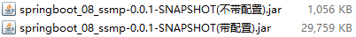
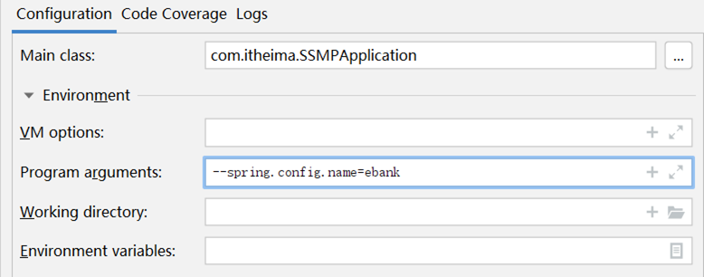

springboot运维实用篇
基础篇发布以后，看到了很多小伙伴在网上的留言，也帮助超过100位小伙伴解决了一些遇到的问题，并且已经发现了部分问题具有典型性，预计将有些问题在后面篇章的合适位置添加到本套课程中，作为解决方案提供给大家。
从此刻开始，咱们就要进入到实用篇的学习了。实用篇是在基础篇的根基之上，补全SpringBoot的知识图谱。比如在基础篇中只给大家讲了yaml的语法格式，但是具体写yaml文件的时候还有很多实用开发过程中的坑，这些在实用篇中都要进行学习。
实用篇共分为两块内容，分别是运维实用篇和开发实用篇。其实划分的标准是我自己制定的，因为这里面的知识有一些还是比较散的，做两个阶段的划分是为了更好的将同类知识点进行归类，帮助学习者找到知识之间的关联性，这样有助于知识的记忆存储转换，经过一系列的知识反复出现与强化练习，将临时记忆转换成永久性记忆。做课程嘛，不能仅以讲完为目标，要以学习者的学习收获为目标，这也是我这么多年教学秉承的基本理念。
下面就从运维实用篇开始讲，在运维实用篇中，我给学习者的定位是玩转配置，为开发实用篇中做各种技术的整合做好准备工作。与开发实用篇相比，运维实用篇的内容显得略微单薄，并且有部分知识模块在运维实用篇和开发实用篇中都要讲一部分，这些内容都后置到开发实用篇中了。废话不说了，先看看运维实用篇中都包含哪些内容：
- SpringBoot程序的打包与运行
- 配置高级
- 多环境开发
- 日志
下面开启第一部分SpringBoot程序打包与运行的学习
YW-1.SpringBoot程序的打包与运行
刚开始做开发学习的小伙伴可能在有一个知识上面有错误的认知，我们天天写程序是在Idea下写的，运行也是在Idea下运行的。

但是实际开发完成后，我们的项目是不可能运行在自己的电脑上的。
我们以后制作的程序是运行在专用的服务器上的，简单说就是将你做的程序放在一台独立运行的电脑上，这台电脑要比你开发使用的计算机更专业，并且安全等级各个方面要远超过你现在的电脑。

那我们的程序如何放置在这台专用的电脑上呢，这就要将我们的程序先组织成一个文件，然后将这个文件传输到这台服务器上。这里面就存在两个过程，一个是打包的过程，另一个是运行的过程。
温馨提示
企业项目上线为了保障环境适配性会采用下面流程发布项目，这里不讨论此过程。
- 开发部门使用Git、SVN等版本控制工具上传工程到版本服务器
- 服务器使用版本控制工具下载工程
- 服务器上使用Maven工具在当前真机环境下重新构建项目
- 启动服务
继续说我们的打包和运行过程。所谓打包指将程序转换成一个可执行的文件，所谓运行指不依赖开发环境执行打包产生的文件。上述两个操作都有对应的命令可以快速执行。
程序打包
SpringBoot程序是基于Maven创建的，在Maven中提供有打包的指令，叫做package。本操作可以在Idea环境下执行。
1 | mvn package |
打包后会产生一个与工程名类似的jar文件，其名称是由模块名+版本号+.jar组成的。
程序运行
程序包打好以后，就可以直接执行了。在程序包所在路径下，执行指令。
1 | java -jar 工程包名.jar |
执行程序打包指令后，程序正常运行，与在Idea下执行程序没有区别。
特别关注：如果你的计算机中没有安装java的jdk环境，是无法正确执行上述操作的，因为程序执行使用的是java指令。
特别关注：在使用向导创建SpringBoot工程时，pom.xml文件中会有如下配置，这一段配置千万不能删除，否则打包后无法正常执行程序。
1 | <build> |
总结
- SpringBoot工程可以基于java环境下独立运行jar文件启动服务
- SpringBoot工程执行mvn命令package进行打包
- 执行jar命令：java –jar 工程名.jar
SpringBoot程序打包失败处理
有些小伙伴打包以后执行会出现一些问题，导致程序无法正常执行，例如下面的现象

要想搞清楚这个问题就要说说.jar文件的工作机制了，知道了这个东西就知道如何避免此类问题的发生了。
搞java开发平时会接触很多jar包，比如mysql的驱动jar包，而上面我们打包程序后得到的也是一个jar文件。这个时候如果你使用上面的java -jar指令去执行mysql的驱动jar包就会出现上述不可执行的现象，而我们的SpringBoot项目为什么能执行呢？其实是因为打包方式不一样。
在SpringBoot工程的pom.xml中有下面这组配置，这组配置决定了打包出来的程序包是否可以执行。
1 | <build> |
我们分别开启这段配置和注释掉这段配置分别执行两次打包，然后观察两次打包后的程序包的差别，共有3处比较明显的特征
- 打包后文件的大小不同
- 打包后所包含的内容不同
- 打包程序中个别文件内容不同
先看第一个现象，文件大小不同。带有配置时打包生成的程序包大小如下：
 不难看出，带有配置的程序包体积比不带配置的大了30倍，那这里面都有什么呢？能差这么多？下面看看里面的内容有什么区别。

我们发现内容也完全不一样，仅有一个目录是一样的，叫做META-INF。打开容量大的程序包中的BOOT-INF目录下的classes目录，我们发现其中的内容居然和容量小的程序包中的内容完全一样。
原来大的程序包中除了包含小的程序包中的内容，还有别的东西。都有什么呢？回到BOOT-INF目录下，打开lib目录，里面显示了很多个jar文件。

仔细翻阅不难发现，这些jar文件都是我们制作这个工程时导入的坐标对应的文件。大概可以想明白了，SpringBoot程序为了让自己打包生成的程序可以独立运行，不仅将项目中自己开发的内容进行了打包，还把当前工程运行需要使用的jar包全部打包进来了。为什么这样做呢？就是为了可以独立运行。不依赖程序包外部的任何资源可以独立运行当前程序。这也是为什么大的程序包容量是小的程序包容量的30倍的主要原因。
再看看大程序包还有什么不同之处，在最外层目录包含一个org目录，进入此目录，目录名是org\springframework\boot\loader，在里面可以找到一个JarLauncher.class的文件，先记得这个文件。再看这套目录名，明显是一个Spring的目录名，为什么要把Spring框架的东西打包到这个程序包中呢？不清楚。
回到两个程序包的最外层目录，查看名称相同的文件夹META-INF下都有一个叫做MANIFEST.MF的文件，但是大小不同，打开文件，比较内容区别
小容量文件的MANIFEST.MF
1
2
3
4
5Manifest-Version: 1.0
Implementation-Title: springboot_08_ssmp
Implementation-Version: 0.0.1-SNAPSHOT
Build-Jdk-Spec: 1.8
Created-By: Maven Jar Plugin 3.2.0大容量文件的MANIFEST.MF
1
2
3
4
5
6
7
8
9
10
11
12Manifest-Version: 1.0
Spring-Boot-Classpath-Index: BOOT-INF/classpath.idx
Implementation-Title: springboot_08_ssmp
Implementation-Version: 0.0.1-SNAPSHOT
Spring-Boot-Layers-Index: BOOT-INF/layers.idx
Start-Class: com.itheima.SSMPApplication
Spring-Boot-Classes: BOOT-INF/classes/
Spring-Boot-Lib: BOOT-INF/lib/
Build-Jdk-Spec: 1.8
Spring-Boot-Version: 2.5.4
Created-By: Maven Jar Plugin 3.2.0
Main-Class: org.springframework.boot.loader.JarLauncher
大文件中明显比小文件中多了几行信息，其中最后一行信息是Main-Class: org.springframework.boot.loader.JarLauncher。这句话什么意思呢？如果使用java -jar执行此程序包，将执行Main-Class属性配置的类，这个类恰巧就是前面看到的那个文件。原来SpringBoot打包程序中出现Spring框架的东西是为这里服务的。而这个org.springframework.boot.loader.JarLauncher类内部要查找Start-Class属性中配置的类，并执行对应的类。这个属性在当前配置中也存在，对应的就是我们的引导类类名。
现在这组设定的作用就搞清楚了
- SpringBoot程序添加配置后会打出一个特殊的包，包含Spring框架部分功能，原始工程内容，原始工程依赖的jar包
- 首先读取MANIFEST.MF文件中的Main-Class属性，用来标记执行java -jar命令后运行的类
- JarLauncher类执行时会找到Start-Class属性，也就是启动类类名
- 运行启动类时会运行当前工程的内容
- 运行当前工程时会使用依赖的jar包，从lib目录中查找
看来SpringBoot打出来了包为了能够独立运行，简直是煞费苦心，将所有需要使用的资源全部都添加到了这个包里。这就是为什么这个jar包能独立运行的原因。
再来看之前的报错信息：
由于打包时没有使用那段配置，结果打包后形成了一个普通的jar包，在MANIFEST.MF文件中也就没有了Main-Class对应的属性了，所以运行时提示找不到主清单属性，这就是报错的原因。
上述内容搞清楚对我们编程意义并不大，但是对各位小伙伴理清楚SpringBoot工程独立运行的机制是有帮助的。其实整体过程主要是带着大家分析，如果以后遇到了类似的问题，多给自己提问，多问一个为什么，兴趣自己就可以独立解决问题了。
总结
- spring-boot-maven-plugin插件用于将当前程序打包成一个可以独立运行的程序包
命令行启动常见问题及解决方案
各位小伙伴在DOS环境下启动SpringBoot工程时，可能会遇到端口占用的问题。给大家一组命令，不用深入学习，备用吧。
1 | # 查询端口 |
关于打包与运行程序其实还有一系列的配置和参数，下面的内容中遇到再说，这里先开个头，知道如何打包和运行程序。
SpringBoot项目快速启动（Linux版）
其实对于Linux系统下的程序运行与Windows系统下的程序运行差别不大，命令还是那组命令，只不过各位小伙伴可能对Linux指令不太熟悉，结果就会导致各种各样的问题发生。比如防火墙如何关闭，IP地址如何查询，JDK如何安装等等。这里不作为重点内容给大家普及了，了解一下整体过程就行了。
YW-2.配置高级
关于配置在基础篇讲过一部分，基础篇的配置总体上来说就是让各位小伙伴掌握配置的格式。比如配置文件如何写啊，写好的数据如何读取啊，都是基础的语法级知识。在实用篇中就要集中在配置的应用这个方面了，下面就开始配置高级相关内容的第一部分学习，为什么说第一部分，因为在开发实用篇中还有对应的配置高级知识要进行学习。
YW-2-1.临时属性设置
目前我们的程序包打好了，可以发布了。但是程序包打好以后，里面的配置都已经是固定的了，比如配置了服务器的端口是8080。如果我要启动项目，发现当前我的服务器上已经有应用启动起来并且占用了8080端口，这个时候就尴尬了。难道要重新把打包好的程序修改一下吗？比如我要把打包好的程序启动端口改成80。


SpringBoot提供了灵活的配置方式，如果你发现你的项目中有个别属性需要重新配置，可以使用临时属性的方式快速修改某些配置。方法也特别简单，在启动的时候添加上对应参数就可以了。
1 | java –jar springboot.jar –-server.port=80 |
上面的命令是启动SpringBoot程序包的命令，在命令输入完毕后，空一格，然后输入两个-号。下面按照属性名=属性值的形式添加对应参数就可以了。记得，这里的格式不是yaml中的书写格式，当属性存在多级名称时，中间使用点分隔，和properties文件中的属性格式完全相同。
如果你发现要修改的属性不止一个，可以按照上述格式继续写，属性与属性之间使用空格分隔。
1 | java –jar springboot.jar –-server.port=80 --logging.level.root=debug |
属性加载优先级
现在我们的程序配置受两个地方控制了，第一配置文件，第二临时属性。并且我们发现临时属性的加载优先级要高于配置文件的。那是否还有其他的配置方式呢？其实是有的，而且还不少，打开官方文档中对应的内容，就可以查看配置读取的优先顺序。地址奉上：https://docs.spring.io/spring-boot/docs/current/reference/html/spring-boot-features.html#boot-features-external-config

我们可以看到，居然有14种配置的位置，而我们现在使用的是这里面的2个。第3条Config data说的就是使用配置文件，第11条Command line arguments说的就是使用命令行临时参数。而这14种配置的顺序就是SpringBoot加载配置的顺序，言外之意，命令行临时属性比配置文件的加载优先级高，所以这个列表上面的优先级低，下面的优先级高。其实这个东西不用背的，你就记得一点，你最终要什么效果，你自己是知道的，不管这个顺序是怎么个高低排序，开发时一定要配置成你要的顺序为准。这个顺序只是在你想不明白问题的时候帮助你分析罢了。
比如你现在加载了一个user.name属性。结果你发现出来的结果和你想的不一样，那肯定是别的优先级比你高的属性覆盖你的配置属性了，那你就可以看着这个顺序挨个排查。哪个位置有可能覆盖了你的属性。
我在课程评论区看到小伙伴学习基础篇的时候问这个问题了，就是这个原因造成的。在yaml中配置了user.name属性值，然后读取出来的时候居然不是自己的配置值，因为在系统属性中有一个属性叫做user.name，两个相互冲突了。而系统属性的加载优先顺序在上面这个列表中是5号，高于3号，所以SpringBoot最终会加载系统配置属性user.name。
总结
- 使用jar命令启动SpringBoot工程时可以使用临时属性替换配置文件中的属性
- 临时属性添加方式：java –jar 工程名.jar –-属性名=值
- 多个临时属性之间使用空格分隔
- 临时属性必须是当前boot工程支持的属性，否则设置无效
开发环境中使用临时属性
临时使用目前是有了，但是上线的时候通过命令行输入的临时属性必须是正确的啊，那这些属性配置值我们必须在开发环境中测试好才行。下面说一下开发环境中如何使用临时属性，其实就是Idea界面下如何操作了。
打开SpringBoot引导类的运行界面，在里面找到配置项。其中Program arguments对应的位置就是添加临时属性的，可以加几个试试效果。

做到这里其实可以产生一个思考了，如果对java编程熟悉的小伙伴应该知道，我们运行main方法的时候，如果想使用main方法的参数，也就是下面的args参数，就是在上面这个位置添加的参数。
1 | public static void main(String[] args) { |
原来是这样，通过这个args就可以获取到参数。再来看我们的引导类是如何书写的
1 | public static void main(String[] args) { |
这个args参数居然传递给了run方法，看来在Idea中配置的临时参数就是通过这个位置传递到我们的程序中的。言外之意，这里如果不用这个args是不是就断开了外部传递临时属性的入口呢？是这样的，我们可以使用下面的调用方式，这样外部临时属性就无法进入到SpringBoot程序中了。
1 | public static void main(String[] args) { |
或者还可以使用如下格式来玩这个操作，就是将配置不写在配置文件中，直接写成一个字符串数组，传递给程序入口。当然，这种做法并没有什么实际开发意义。
1 | public static void main(String[] args) { |
总结
- 启动SpringBoot程序时，可以选择是否使用命令行属性为SpringBoot程序传递启动属性
思考
现在使用临时属性可以在启动项目前临时更改配置了，但是新的问题又出来了。临时属性好用是好用，就是写的多了会很麻烦。比如我现在有个需求，上线的时候使用临时属性配置20个值，这下可麻烦了，能不能搞得简单点，集中管理一下呢？比如说搞个文件，加载指定文件？还真可以。怎么做呢？咱们下一节再说。
YW-2-2.配置文件分类
SpringBoot提供了配置文件和临时属性的方式来对程序进行配置。前面一直说的是临时属性，这一节要说说配置文件了。其实这个配置文件我们一直在使用，只不过我们用的是SpringBoot提供的4级配置文件中的其中一个级别。4个级别分别是：
- 类路径下配置文件（一直使用的是这个，也就是resources目录中的application.yml文件）
- 类路径下config目录下配置文件
- 程序包所在目录中配置文件
- 程序包所在目录中config目录下配置文件
好复杂，一个一个说。其实上述4种文件是提供给你了4种配置文件书写的位置，功能都是一样的，都是做配置的。那大家关心的就是差别了，没错，就是因为位置不同，产生了差异。总体上来说，4种配置文件如果都存在的话，有一个优先级的问题，说白了就是加入4个文件我都有，里面都有一样的配置，谁生效的问题。上面4个文件的加载优先顺序为
- file ：config/application.yml 【最高】
- file ：application.yml
- classpath：config/application.yml
- classpath：application.yml 【最低】
那为什么设计这种多种呢？说一个最典型的应用吧。
- 场景A：你作为一个开发者，你做程序的时候为了方便自己写代码，配置的数据库肯定是连接你自己本机的，咱们使用4这个级别，也就是之前一直用的application.yml。
- 场景B：现在项目开发到了一个阶段，要联调测试了，连接的数据库是测试服务器的数据库，肯定要换一组配置吧。你可以选择把你之前的文件中的内容都改了，目前还不麻烦。
- 场景C：测试完了，一切OK。你继续写你的代码，你发现你原来写的配置文件被改成测试服务器的内容了，你要再改回来。现在明白了不？场景B中把你的内容都改掉了，你现在要重新改回来，以后呢？改来改去吗？
解决方案很简单，用上面的3这个级别的配置文件就可以快速解决这个问题，再写一个配置就行了。两个配置文件共存，因为config目录中的配置加载优先级比你的高，所以配置项如果和级别4里面的内容相同就覆盖了，这样是不是很简单？
级别1和2什么时候使用呢？程序打包以后就要用这个级别了，管你程序里面配置写的是什么？我的级别高，可以轻松覆盖你，就不用考虑这些配置冲突的问题了。
总结
配置文件分为4种
- 项目类路径配置文件：服务于开发人员本机开发与测试
- 项目类路径config目录中配置文件：服务于项目经理整体调控
- 工程路径配置文件：服务于运维人员配置涉密线上环境
- 工程路径config目录中配置文件：服务于运维经理整体调控
多层级配置文件间的属性采用叠加并覆盖的形式作用于程序
YW-2-3.自定义配置文件
之前咱们做配置使用的配置文件都是application.yml，其实这个文件也是可以改名字的，这样方便维护。比如我2020年4月1日搞活动，走了一组配置，2020年5月1日活动取消，恢复原始配置，这个时候只需要重新更换一下配置文件就可以了。但是你总不能在原始配置文件上修改吧，不然搞完活动以后，活动的配置就留不下来了，不利于维护。
自定义配置文件方式有如下两种：
方式一：使用临时属性设置配置文件名，注意仅仅是名称，不要带扩展名
方式二：使用临时属性设置配置文件路径，这个是全路径名

也可以设置加载多个配置文件

使用的属性一个是spring.config.name，另一个是spring.config.location，这个一定要区别清楚。
温馨提示
我们现在研究的都是SpringBoot单体项目，就是单服务器版本。其实企业开发现在更多的是使用基于SpringCloud技术的多服务器项目。这种配置方式和我们现在学习的完全不一样，所有的服务器将不再设置自己的配置文件，而是通过配置中心获取配置，动态加载配置信息。为什么这样做？集中管理。这里不再说这些了，后面再讲这些东西。
总结
- 配置文件可以修改名称，通过启动参数设定
- 配置文件可以修改路径，通过启动参数设定
- 微服务开发中配置文件通过配置中心进行设置
YW-3.多环境开发
讲的内容距离线上开发越来越近了，下面说一说多环境开发问题。
什么是多环境？其实就是说你的电脑上写的程序最终要放到别人的服务器上去运行。每个计算机环境不一样，这就是多环境。常见的多环境开发主要兼顾3种环境设置，开发环境——自己用的，测试环境——自己公司用的，生产环境——甲方爸爸用的。因为这是绝对不同的三台电脑，所以环境肯定有所不同，比如连接的数据库不一样，设置的访问端口不一样等等。

YW-3-1.多环境开发（yaml单一文件版）
那什么是多环境开发？就是针对不同的环境设置不同的配置属性即可。比如你自己开发时，配置你的端口如下：
1 | server: |
如何想设计两组环境呢？中间使用三个减号分隔开
1 | server: |
如何区分两种环境呢？起名字呗
1 | spring: |
那用哪一个呢？设置默认启动哪个就可以了
1 | spring: |
就这么简单，再多来一组环境也OK
1 | spring: |
其中关于环境名称定义上述格式是过时格式，标准格式如下
1 | spring: |
总结
- 多环境开发需要设置若干种常用环境，例如开发、生产、测试环境
- yaml格式中设置多环境使用—区分环境设置边界
- 每种环境的区别在于加载的配置属性不同
- 启用某种环境时需要指定启动时使用该环境
YW-3-2.多环境开发（yaml多文件版）
将所有的配置都放在一个配置文件中，尤其是每一个配置应用场景都不一样，这显然不合理，于是就有了将一个配置文件拆分成多个配置文件的想法。拆分后，每个配置文件中写自己的配置，主配置文件中写清楚用哪一个配置文件就好了。
主配置文件
1 | spring: |
环境配置文件
1 | server: |
环境配置文件因为每一个都是配置自己的项，所以连名字都不用写里面了。那问题是如何区分这是哪一组配置呢？使用文件名区分。
application-pro.yaml
1 | server: |
application-dev.yaml
1 | server: |
文件的命名规则为：application-环境名.yml。
在配置文件中，如果某些配置项所有环境都一样，可以将这些项写入到主配置中，只有哪些有区别的项才写入到环境配置文件中。
- 主配置文件中设置公共配置（全局）
- 环境分类配置文件中常用于设置冲突属性（局部）
总结
可以使用独立配置文件定义环境属性
独立配置文件便于线上系统维护更新并保障系统安全性
YW-3-3.多环境开发（properties多文件版）
SpringBoot最早期提供的配置文件格式是properties格式的，这种格式的多环境配置也了解一下吧。
主配置文件
1 | spring.profiles.active=pro |
环境配置文件
application-pro.properties
1 | server.port=80 |
application-dev.properties
1 | server.port=81 |
文件的命名规则为：application-环境名.properties。
总结
- properties文件多环境配置仅支持多文件格式
YW-3-4.多环境开发独立配置文件书写技巧
作为程序员在搞配置的时候往往处于一种分久必合合久必分的局面。开始先写一起，后来为了方便维护就拆分。对于多环境开发也是如此，下面给大家说一下如何基于多环境开发做配置独立管理，务必掌握。
准备工作
将所有的配置根据功能对配置文件中的信息进行拆分，并制作成独立的配置文件，命名规则如下
- application-devDB.yml
- application-devRedis.yml
- application-devMVC.yml
使用
使用include属性在激活指定环境的情况下，同时对多个环境进行加载使其生效，多个环境间使用逗号分隔
1 | spring: |
比较一下，现在相当于加载dev配置时，再加载对应的3组配置，从结构上就很清晰，用了什么，对应的名称是什么
注意
当主环境dev与其他环境有相同属性时，主环境属性生效；其他环境中有相同属性时，最后加载的环境属性生效
改良
但是上面的设置也有一个问题，比如我要切换dev环境为pro时，include也要修改。因为include属性只能使用一次，这就比较麻烦了。SpringBoot从2.4版开始使用group属性替代include属性，降低了配置书写量。简单说就是我先写好，你爱用哪个用哪个。
1 | spring: |
现在再来看，如果切换dev到pro，只需要改一下是不是就结束了？完美！
总结
- 多环境开发使用group属性设置配置文件分组，便于线上维护管理
YW-3-5.多环境开发控制
多环境开发到这里基本上说完了，最后说一个冲突问题。就是maven和SpringBoot同时设置多环境的话怎么搞。
要想处理这个冲突问题，你要先理清一个关系，究竟谁在多环境开发中其主导地位。也就是说如果现在都设置了多环境，谁的应该是保留下来的，另一个应该遵从相同的设置。
maven是做什么的？项目构建管理的，最终生成代码包的，SpringBoot是干什么的？简化开发的。简化，又不是其主导作用。最终还是要靠maven来管理整个工程，所以SpringBoot应该听maven的。整个确认后下面就好做了。大体思想如下：
- 先在maven环境中设置用什么具体的环境
- 在SpringBoot中读取maven设置的环境即可
maven中设置多环境（使用属性方式区分环境）
1 | <profiles> |
SpringBoot中读取maven设置值
1 | spring: |
上面的@属性名@就是读取maven中配置的属性值的语法格式。
总结
- 当Maven与SpringBoot同时对多环境进行控制时，以Mavn为主，SpringBoot使用@..@占位符读取Maven对应的配置属性值
- 基于SpringBoot读取Maven配置属性的前提下，如果在Idea下测试工程时pom.xml每次更新需要手动compile方可生效
YW-4.日志
运维篇最后一部分我们来聊聊日志，日志大家不陌生，简单介绍一下。日志其实就是记录程序日常运行的信息，主要作用如下：
- 编程期调试代码
- 运营期记录信息
- 记录日常运营重要信息（峰值流量、平均响应时长……）
- 记录应用报错信息（错误堆栈）
- 记录运维过程数据（扩容、宕机、报警……）
或许各位小伙伴并不习惯于使用日志，没关系，慢慢多用，习惯就好。想进大厂，这是最基本的，别去面试的时候说没用过，完了，没机会了。
YW-4-1.代码中使用日志工具记录日志
日志的使用格式非常固定，直接上操作步骤：
步骤①：添加日志记录操作
1 |
|
上述代码中log对象就是用来记录日志的对象，下面的log.debug，log.info这些操作就是写日志的API了。
步骤②：设置日志输出级别
日志设置好以后可以根据设置选择哪些参与记录。这里是根据日志的级别来设置的。日志的级别分为6种，分别是：
- TRACE：运行堆栈信息，使用率低
- DEBUG：程序员调试代码使用
- INFO：记录运维过程数据
- WARN：记录运维过程报警数据
- ERROR：记录错误堆栈信息
- FATAL：灾难信息，合并计入ERROR
一般情况下，开发时候使用DEBUG，上线后使用INFO，运维信息记录使用WARN即可。下面就设置一下日志级别：
1 | # 开启debug模式，输出调试信息，常用于检查系统运行状况 |
这么设置太简单粗暴了，日志系统通常都提供了细粒度的控制
1 | # 开启debug模式，输出调试信息，常用于检查系统运行状况 |
还可以再设置更细粒度的控制
步骤③：设置日志组，控制指定包对应的日志输出级别，也可以直接控制指定包对应的日志输出级别
1 | logging: |
说白了就是总体设置一下，每个包设置一下，如果感觉设置的麻烦，就先把包分个组，对组设置，没了，就这些。
总结
- 日志用于记录开发调试与运维过程消息
- 日志的级别共6种，通常使用4种即可，分别是DEBUG，INFO,WARN,ERROR
- 可以通过日志组或代码包的形式进行日志显示级别的控制
教你一招：优化日志对象创建代码
写代码的时候每个类都要写创建日志记录对象，这个可以优化一下，使用前面用过的lombok技术给我们提供的工具类即可。
1 |
|
导入lombok后使用注解搞定，日志对象名为log
1 | //这个注解替代了下面那一行 |
总结
- 基于lombok提供的@Slf4j注解为类快速添加日志对象
YW-4-2.日志输出格式控制
日志已经能够记录了，但是目前记录的格式是SpringBoot给我们提供的，如果想自定义控制就需要自己设置了。先分析一下当前日志的记录格式。

对于单条日志信息来说，日期，触发位置，记录信息是最核心的信息。级别用于做筛选过滤，PID与线程名用于做精准分析。了解这些信息后就可以DIY日志格式了。本课程不做详细的研究，有兴趣的小伙伴可以学习相关的知识。下面给出课程中模拟的官方日志模板的书写格式，便于大家学习。
1 | logging: |
总结
- 日志输出格式设置规则
YW-4-3.日志文件
日志信息显示，记录已经控制住了，下面就要说一下日志的转存了。日志不能仅显示在控制台上，要把日志记录到文件中，方便后期维护查阅。
对于日志文件的使用存在各种各样的策略，例如每日记录，分类记录，报警后记录等。这里主要研究日志文件如何记录。
记录日志到文件中格式非常简单，设置日志文件名即可。
1 | logging: |
虽然使用上述格式可以将日志记录下来了，但是面对线上的复杂情况，一个文件记录肯定是不能够满足运维要求的，通常会每天记录日志文件，同时为了便于维护，还要限制每个日志文件的大小。下面给出日志文件的常用配置方式：
1 | logging: |
以上格式是基于logback日志技术设置每日日志文件的设置格式，要求容量到达3KB以后就转存信息到第二个文件中。文件命名规则中的%d标识日期，%i是一个递增变量，用于区分日志文件。
总结
- 日志记录到文件
- 日志文件格式设置
运维实用篇完结
运维实用篇到这里就要先告一段落了，为什么不说结束呢？因为运维篇中还有一些知识，但是现在讲解过于分散了。所以要把这些知识与开发实用篇的知识结合在一起讲，也是本课程的教学设计的体现。
在整体运维实用篇中带着大家学习了4块内容，首先学习了如何运行SpringBoot程序，也就是程序的打包与运行，接下来对配置进行了升级学习，不再局限在配置文件中进行设置，通过临时属性，外部配置文件对项目的配置进行管控。在多环境开发中给大家介绍了多种多环境开发的格式，其实掌握一种即可，此外还给大家讲了多环境开发的一些技巧以及与maven的冲突解决方案。最后给大家介绍了日志系统，老实说日志这里讲的相当的潦草，因为大部分日志相关的知识都不应该在这门课中学习，这里只是告诉大家如何整合实用而已。
看了各位小伙伴的评论，知道你们再催更，我也在加油，一起努力吧，实用开发篇再会。实用开发篇会提高更新频度，不全部做完给大家更新了，我先把做好的一部分开放出来，随后做完一点就更新一点，额，好吧，就说到这里吧。